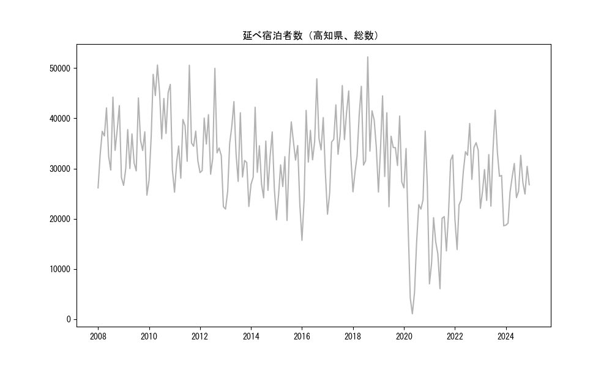
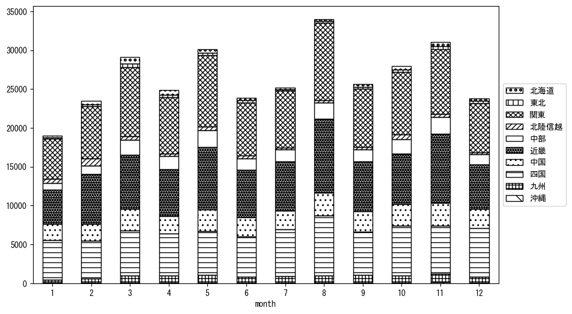
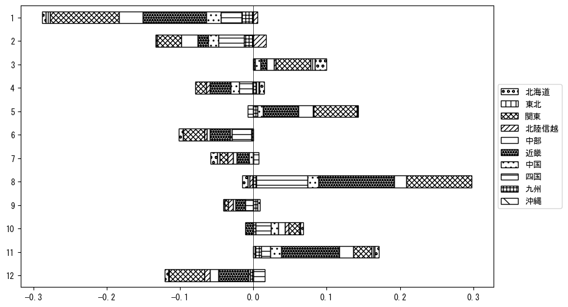

-
トップ
-
高知県
高知県
１．延べ宿泊者（総数）の推移
時系列グラフ

図１：高知県内の従業員数100人以上の宿泊施設での延べ宿泊者数（国外、居住地不詳を含む総数）。
基本統計量
表１：従業員数100人以上の宿泊施設での延べ宿泊者の総数（国外、および居住地不詳を含む）に関する基本統計量。単位は人泊。平均は１か月あたりの平均値を表す。図１に対応。
| 2008年 |
35,280 |
5,810 |
26,143 (1月) |
44,218 (8月) |
| 2009年 |
33,099 |
5,467 |
24,704 (12月) |
44,061 (8月) |
| 2010年 |
40,966 |
7,417 |
27,684 (1月) |
50,602 (5月) |
| 2011年 |
34,840 |
6,488 |
25,296 (1月) |
50,566 (8月) |
| 2012年 |
33,951 |
7,055 |
22,402 (12月) |
49,963 (8月) |
| 2013年 |
31,605 |
6,942 |
21,931 (1月) |
43,331 (5月) |
| 2014年 |
30,753 |
5,584 |
24,173 (7月) |
42,211 (3月) |
| 2015年 |
29,181 |
6,332 |
19,657 (6月) |
39,287 (8月) |
| 2016年 |
33,683 |
8,401 |
15,707 (1月) |
47,873 (8月) |
| 2017年 |
35,893 |
7,635 |
20,907 (1月) |
46,527 (8月) |
| 2018年 |
36,499 |
7,747 |
25,365 (1月) |
52,235 (8月) |
| 2019年 |
33,270 |
6,731 |
22,405 (6月) |
44,473 (3月) |
| 2020年 |
19,804 |
11,515 |
1,075 (5月) |
37,463 (11月) |
| 2021年 |
17,694 |
8,443 |
6,071 (6月) |
32,700 (12月) |
| 2022年 |
28,793 |
7,358 |
13,877 (2月) |
38,971 (8月) |
| 2023年 |
28,402 |
6,411 |
18,600 (12月) |
41,634 (8月) |
２．宿泊者数の重心（年平均の推移）
図２：高知県内の従業員数100人以上の宿泊施設での延べ宿泊者数（国外、居住地不詳を除く）の重心（年平均の推移）。
全画面表示
重心の前年平均からの移動距離と方位、および緯度・経度
表２：重心の前年平均からの移動距離と方位、および緯度・経度。図２に対応。
| 2008年 |
— |
— |
34.9896 |
136.1112 |
| 2009年 |
西南西 |
8.0km |
34.9704 |
136.0267 |
| 2010年 |
東北東 |
11.4km |
35.0237 |
136.1331 |
| 2011年 |
南南西 |
6.9km |
34.9643 |
136.1097 |
| 2012年 |
北東 |
7.6km |
35.0209 |
136.1563 |
| 2013年 |
東南東 |
10.0km |
34.9777 |
136.2521 |
| 2014年 |
西南西 |
15.3km |
34.9419 |
136.0907 |
| 2015年 |
東北東 |
25.4km |
35.0631 |
136.3265 |
| 2016年 |
西南西 |
12.5km |
35.0231 |
136.1981 |
| 2017年 |
東 |
7.3km |
35.0305 |
136.2773 |
| 2018年 |
南東 |
6.5km |
34.9958 |
136.3344 |
| 2019年 |
南西 |
12.4km |
34.9289 |
136.2250 |
| 2020年 |
西南西 |
69.6km |
34.7057 |
135.5141 |
| 2021年 |
東南東 |
4.7km |
34.6847 |
135.5588 |
| 2022年 |
東北東 |
42.7km |
34.8933 |
135.9509 |
| 2023年 |
東北東 |
19.5km |
34.9865 |
136.1323 |
運輸局別延べ宿泊者数
時系列（年平均）
図３：高知県内の従業員数100人以上の宿泊施設での１か月あたり平均延べ宿泊者数（国外、居住地不詳を除く）の運輸局別内訳。
寄与度（前年からの変化率に対する）
図４：高知県内の従業員数100人以上の宿泊施設での運輸局別延べ宿泊者数（国外、居住地不詳を除く）から求めた寄与度。
３．宿泊者数の重心（月別）
図５：高知県内の従業員数100人以上の宿泊施設での延べ宿泊者数（国外、居住地不詳を除く）の重心（月別）。観測期間は2008年1月から2023年12月まで。
全画面表示
全期間（2008年1月～2023年12月）の平均と月別平均の比較
表３：全期間の平均から月別平均までの移動距離と方位、および緯度・経度。図５に対応。
| 全期間 |
— |
— |
34.9500 |
136.0873 |
| 1月 |
西 |
8.7km |
34.9511 |
135.9924 |
| 2月 |
北東 |
23.8km |
35.0886 |
136.2862 |
| 3月 |
北東 |
25.6km |
35.1010 |
136.2990 |
| 4月 |
北東 |
6.6km |
34.9992 |
136.1277 |
| 5月 |
東 |
9.4km |
34.9661 |
136.1888 |
| 6月 |
南西 |
10.9km |
34.8823 |
136.0003 |
| 7月 |
南西 |
15.8km |
34.8342 |
135.9862 |
| 8月 |
南南西 |
12.2km |
34.8441 |
136.0524 |
| 9月 |
西南西 |
3.5km |
34.9367 |
136.0520 |
| 10月 |
北 |
2.1km |
34.9692 |
136.0876 |
| 11月 |
西北西 |
2.9km |
34.9625 |
136.0592 |
| 12月 |
西南西 |
18.3km |
34.8652 |
135.9161 |
運輸局別延べ宿泊者数
月別平均（2008年1月～2023年12月）

図６：高知県内の従業員数100人以上の宿泊施設での延べ宿泊者数（国外、居住地不詳を除く）の運輸局別内訳（月別）。
寄与度（全期間の平均から月別平均への変化率に対する）

図７：高知県内の従業員数100人以上の宿泊施設での運輸局別延べ宿泊者数（国外、居住地不詳を除く）から求めた寄与度（月別）。
４．データのダウンロード
出典：観光庁「宿泊旅行統計調査」に収録された「施設所在地、居住地別延べ宿泊者数（従業員数100人以上の施設）」
国土地理院「白地図（地理院タイル）」（図２と図５）